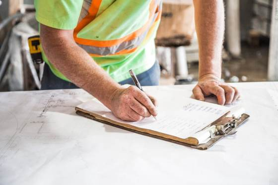
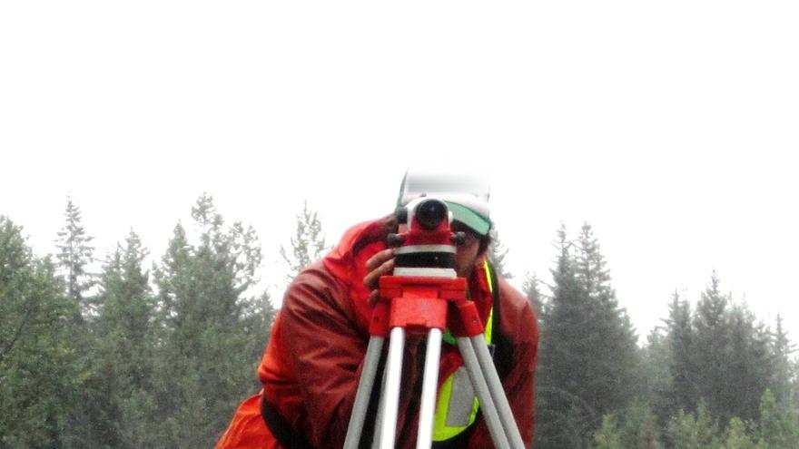
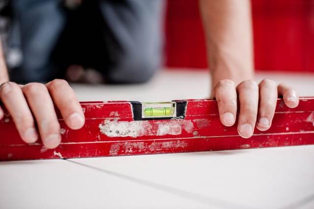
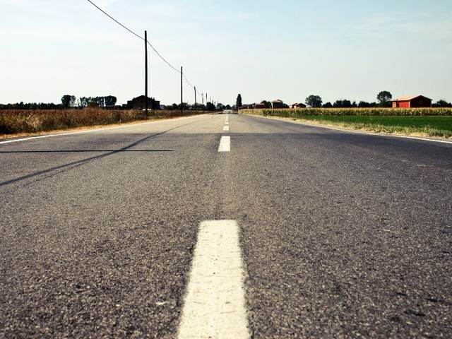
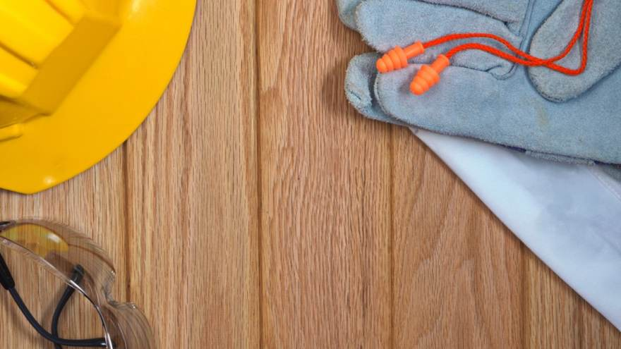

この写真のまま使えます（差し替えも自由）公共測量・地形測量
基準点測量、水準測量、地形測量。作業規程に沿って進め、点検測量まで含めてお納めします。

道路も、橋も、堤防も、建物も。現地を数字にして、図面にする。そこから設計が始まり、工事が動きます。街をつくる、いちばん最初の仕事です。
官公庁の公共測量と設計業務を中心に、民間の用地測量・境界確定も行っています。現地の作業から成果品の納品まで、自社の技術者が受け持ちます。

この写真のまま使えます（差し替えも自由）基準点測量、水準測量、地形測量。作業規程に沿って進め、点検測量まで含めてお納めします。

この写真のまま使えます（差し替えも自由）土地の境界を隣接の方と確認し、境界標を設置します。登記に使える図面をお作りします。

この写真のまま使えます（差し替えも自由）現況の測量から、計画の検討、詳細設計、数量計算まで。発注者の意図を図面に落とし込みます。
ボーリング、土質試験、地盤の解析。紙図面のCAD化や路線の踏査もお引き受けします。
お問い合わせから納品まで。公共の業務も民間の依頼も、進め方は同じです。
目的と範囲、いつまでに何が必要かを伺います。
法務局・官公庁の図面や過去の成果を集め、現地に入る前に調べます。
基準点を設け、現地を測ります。立ち入りが要る場合は事前にご挨拶します。
観測したデータを計算し、図面と数量にまとめます。
別の技術者が見直します。ここを飛ばすと、あとの工事で止まります。
紙と電子データでお渡しします。電子納品の要領にも対応します。
道路も、橋も、堤防も、建物も、まず測るところから始まります。現地を数字にして、はじめて設計ができる。その基礎をお引き受けしています。
観測した人とは別の技術者が計算と図面を見直します。確かめる工程まで込みで、次の設計にそのまま使える形でお渡しします。
古い路線や施設は、紙の図面しか残っていないことがあります。現地と突き合わせて、使えるデータに直すところからお引き受けします。
いま通っている道路も、渡っている橋も、はじまりは一本の測線です。
現地を数字にして、その上に設計が載り、工事が動く。インフラは全部、測るところから始まります。
自分の引いた一点が、街のかたちの基準になる。そう思える仕事です。
| 商号 | 杜測量設計株式会社 |
|---|---|
| 代表者 | 代表取締役 杜 正之 |
| 所在地 | 〒330-0000 埼玉県さいたま市大宮区○○1-2-3 |
| 電話／FAX | 048-000-0000 ／ 048-000-0001 |
| 創業／設立 | （御社の情報が入ります） |
| 資本金 | （御社の情報が入ります） |
| 従業員数 | （御社の情報が入ります） |
| 建設業許可 | （御社の情報が入ります） |
| 登録 | （御社の情報が入ります） |
| 有資格者 | （御社の情報が入ります） |
| 加盟団体 | （御社の情報が入ります） |
現場と図面、 両方できる人へ。
午前は現地で観測、午後は事務所で計算と図面。どちらか一方ではなく、両方をひととおり覚えてもらいます。測量士補・測量士の受験費用は会社が負担します。

社員・現場の写真が入ります| 募集職種 | 測量技術者／設計技術者 |
|---|---|
| 仕事の内容 | 公共測量、用地測量、道路・河川の設計。現地での観測と、事務所での計算・図面作成。 |
| 応募資格 | 要普通自動車免許。未経験・資格なしでも歓迎します。 |
| 給与 | 月給◯◯◯,◯◯◯円〜◯◯◯,◯◯◯円（経験を考慮のうえ決定） 賞与年◯回／資格手当あり |
| 勤務時間 | 8:30〜17:30（休憩60分） 平均残業時間 月◯◯時間程度 |
| 休日・休暇 | 年間休日◯◯◯日（土曜・日曜・祝日） 夏季・年末年始・有給休暇（年5日以上の取得義務） |
| 待遇 | 各種社会保険完備／資格取得支援（測量士補・測量士の受験費用は全額会社負担）／退職金制度 |
| 応募方法 | お電話またはメールにてご連絡ください。まずは会社見学だけでも構いません。 |
測量・設計のご相談、お見積り、採用のお問い合わせ。まずはご連絡ください。